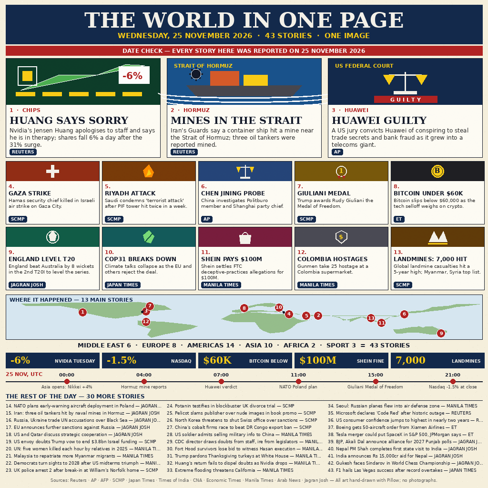

WEDNESDAY · 25 NOVEMBER 2026 · 43 STORIES

Forty-three stories from a single Wednesday, fitted onto one page: Jensen Huang apologises to Nvidia staff as the shares drop 6%, a container ship strikes a mine near the Strait of Hormuz, and a US jury convicts Huawei — with thirty more briefs, a world map, a timeline and a source named on every story.
This page was made for the make.fun news-image bounty for 25 November 2026. Every illustration is drawn by hand in code; there are no photographs anywhere in the entry.
Join make.fun through this referral link — the code trfjt22d is applied when you sign up.
Referral code: trfjt22d · All 43 stories were reported on 25 November 2026.